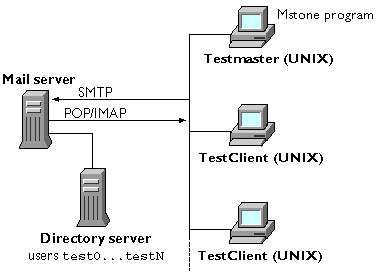
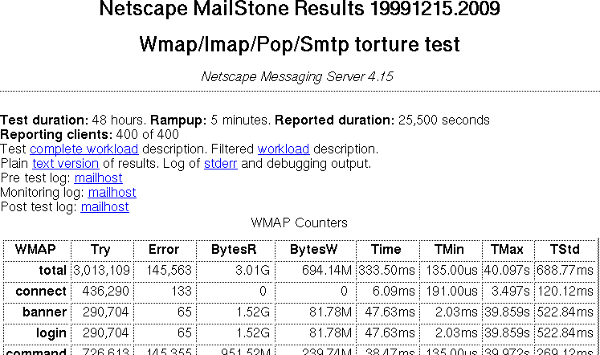

The Mstone multi-protocol benchmarking system
Mstone is a stress-testing tool that system administrators can use to determine server performance under load. It was originally developed to support e-mail based systems (which use SMTP, POP, IMAP, or web based protocols), but recently it has been extended to support the subversion revision control system. Mstone should work on all modern Unix platforms1.
Mstone simulates tasks that users might perform. It lets you simulate worst-case loads—for example, Monday at 9 a.m., when most users are checking their mail and sending and receiving messages—so you can determine what maximum load your messaging server can take.
Mstone can be used to test the load-carrying capabilities of a system configuration before it is put into use. Based on how well a mail server handles the loads generated by Mstone, you can determine whether your current deployment configuration is adequate, or whether you need additional or more powerful server machines.
Mstone measures both throughput and response time of the mail server being tested. Mstone reports the number and size of messages sent, the rate at which messages (and bytes) pass through the system, and the average time taken to both transmit a message to the server and receive a message from the server. Mstone can present its results in both text and graphical format.
Mstone is run from a client machine (referred to as testmaster in these instructions) and controls other client machines to generate the requested load. The client machines can be any mix of supported operating systems.
The Mstone testbed consists of the testmaster machine, any testclient machines, the Messaging Server to be tested, plus the network configuration. There are often supporting machines such as a Directory Server that provide the user account names and passwords. (See ).
Mstone Testbed
When Mstone is run on the testmaster machine, the following happens:
Command line arguments are combined with configuration files to define the test.
The test processes are executed across the testbed using ssh.
Results are collected and displayed on the HTML results page.
Each test is defined by one or more workload configuration files. If you can't stand editing text files, then you won't like mstone (sorry, we've just never had time to develop a full GUI). The good news is that it is easy to see exactly how the test was run and reproduce it.
If you need to build from source, see Building.txt in the source distribution.
To transfer, extract, and install the all-platforms version of the Mstone archive files follow these steps:
Locate the Mstone archive file for your operating system platform. For example: mstone-4.2-linux-i586.tar.gz
Choose the testmaster machine on which you will run Mstone and copy the archive file to a temporary installation directory, such as /tmp, on that machine. The testmaster machine can be the same machine as the server being tested, or a different machine.
Go to the directory on the testmaster immediately above where you want the Mstone software to be installed.
For
example, if you go to /usr/netscape Mstone will be installed in
/usr/netscape/mstone.
If you already have mstone installed, save your configuration file before extracting the new mstone distribution.
cp -rp mstone/conf /tmp
Extract the Mstone files (See for detailed descriptions).
tar xzf /tmp/mstone-4.2.tar.gz
If you installing multiple operating system types, unpack each operating system archive file the same way. This adds the binaries for each supported operating system.
To create an initial configuration for a Mstone test run, perform the following steps:
Go to the mstone directory. (e.g. cd /usr/netscape/mstone). All mstone commands must be run from this directory.
Run ./setup config. This will display the LICENSE and ask if you agree to it.
Answer yes to set up test clients.
Enter the test client machine names.
Configure e-mail or subversion protocols as needed.
Now run ./setup to copy messages and executables to test clients machines. If there are problems with configuration or access permissions, correct them and re-run setup.
If you add/change client machines or change test execution parameters, run ./setup again to copy the necessary files to each test client machine. See ??? for full configuration information.
For accurate test results it is important that the testmaster and all of the testclient machines show the same time on their system clocks. If at all possible, the times should be identical to less than a second.
To check for time consistency run ./checktime.
Checktime uses the client configuration contained in the machine configuration file (general.tbd). The will ssh to each machine and report the time. Because the ssh step takes some time, there might be some variation between the first and last machine, but adjacent machine should be within a second of each other. When in doubt, run checktime again to verify the results.
If there are discrepancies of more than one seconds between machines you need to adjust the system clocks.
The best way to synchronize system clocks is to use the Network Time Protocol (NTP). You can either synchronize once using ntpdate or setup continuous tracking with a ntpd server. These utilities are available for all modern operating systems.
If you do not have an NTP utility, Mstone provides the timesync mode for setup. The timesync utility will only work with operating systems where date supports setting time to the second. You must run ./setup timesync as root and have root ssh permissions on each client machine.
Go the mstone directory. (e.g. cd /usr/netscape/mstone). All mstone commands must be run from this directory.
If you have additional testclient machines, synchronize them as described in Synchronizing Client Machines.
You may need to re-run ./setup to push the mstone binaries and data files to each client machine.
Run the mstone command using the syntax:
./mstone testname [options]
where testname is the test workload file. For example:
./mstone popsmtp
View the results by copying the displayed URL into a browser.
You can specify command line options as needed. Running mstone with no arguments will show the options.
Options specified on the command line override any corresponding configuration parameters in a configuration file. For example, if the configuration file sets the test run time to two hours, but you only want to make a brief trial run of 10 minutes, you would enter this:
./mstone popsmtp -t 10m
describes the command line options you can use with the mstone command.
|
mstone command line options |
|
|
Option |
Description |
|
-a addgraphs |
Specify additional graph sections. |
|
-b banner |
Specifies
the banner (title) to be displayed as part of test results, where
banner is the actual text you want displayed enclosed by
quotation marks. For example: |
|
-c configfile |
Back compatibility with Mstone 4.0/4.1. |
|
-d |
Debug mode. Large amounts of information is output to the stderr log. |
|
-l load |
Specify the number of clients to use. |
|
-n ‘notes’ |
Specify additional notes (‘comments’ in the CONFIG section). |
|
-r ramptime |
Specifies the ramp time, where ramptime is a number and time unit designation. For example, to set a ramp time of 10 seconds: -r 10s |
|
-s sysconfig |
Specify the system data file. |
|
-t time |
Specifies the length of time the test is to run, where time is a number and time unit designation. For example, to set a test run of 20 minutes: -t 20m |
|
-v |
Be more verbose during report processing. |
|
-w workfile |
Specify additional workload files. |
|
PARAM=value |
Set attribute PARAM in the CONFIG section. |
Mstone will update the test report periodically during the test run. The report is first generated about 15 seconds after the test starts and it will then display a URL for accessing the report. It will then update approximately every minute until the test completes. You can also force an update at any time by running the process command. For example:
./process
To stop a test run before it has completed, type Control-C. This will signal mstone to initiate a clean shutdown and generate a report of the test so far. This process usually takes several seconds, but can take up to 5 minutes (if the server is not responding).
All of the results files from each Mstone test run are placed in a time-stamped subdirectory of the results directory. For example, the results of a test run on July 14, 2007 at 14:31 (24 hour clock) are stored in a subdirectory named: results/20070714.1431.
Mstone displays the results of a test run as an HTML page named results.html. There is one results file in each test run subdirectory.
An HTML-formatted index of all test runs is created and maintained in the results/index.html file. This file contains links to the results.html files from every test run.
The top portion of a typical results file is shown in . (Your results will vary depending on how you configured your test run.)
Example Mstone test result page (top portion)

In this illustration:
The timestamp in the title “Netscape Mstone Results 19991215.2009” gives the time of the test run. In this case, December 15, 1999, at 20:09 hours.
The headline “Wmap/Imap/Pop/Http/Smtp torture test” is the text that was specified for the title variable in the primary configuration file (testname.wld).
The headline “Netscape Messaging Server 4.2” is the text that was specified for the comments variable in the primary configuration file (testname.wld).
Under the line are general information about the test and links to additional supporting files.
Then a series of tables report the test results for each protocol.
Following the test result tables, the results file displays the tests results as a series of graphs.
Mstone breaks each client session into timers. Each timer tracks these variables:
|
A try is an attempt to perform an operation. The exact meaning of a try depends on the protocol and the timer. |
|
|
An error indicates that a try did not succeed and the connection will be dropped. A line in the stderr log will indicate the cause of the error. |
|
|
The total number of bytes written by the clients. The exact implementation depends on the protocol. See notes below. |
|
|
The total number of bytes read by the clients. The exact implementation depends on the protocol. See notes below. |
|
|
This is the average transaction time for each try. |
|
|
This is the minimum time for a transaction. A TMin of exactly 0 means that no transactions were performed. |
|
|
This is the maximum time for a transaction. A TMax of exactly 0 means that no transactions were performed. |
|
|
This is the standard deviation of the transaction time. |
The bytes written and read represent data bytes for the retrieve and submit timers, and protocol bytes (data plus overhead) for all others e-mail protocols. For readability, values may be displayed in Kilobytes (1024 bytes), Megabytes (1048576 bytes), or Gigabytes (1073741824 bytes).
The number of successful operations is tries minus errors.
Note that actual precision of the time values depends on the precision of the system clock and on statistical sampling. The times are displayed in seconds unless other units are shown.
Each row in the report is a timer for a specific aspect of the protocol test. The one exception is “Total”, which is a sum of the other timers. Details of how each timer is used in each protocol are found in . Here is the current list of possible timers:
|
Total |
The total timer contains a sum of all the other timers. |
|
Connect |
The connect timer is the establishment of the TCP connection to the server. |
|
Banner |
The banner timer includes the message sent from the server when a connection is established. |
|
Login |
The login timer includes sending the user ID and password and having it verified. |
|
Command |
The command timer records all other protocol exchanges between the client and server. |
|
Submit |
The submit timer records message data sent to the server. |
|
Retrieve |
The retrieve timer records messages received from the server. |
|
Headers |
The headers timer records non-message HTML pages received from the server. |
|
Logout |
The logout timer records normally closed connections. |
|
Idle |
The idle timer records time that the client spent sleeping between requests to the server. |
Some stages may be bypasses depending on the protocol and workload. For example, the SMTP protocol will only do a “Login” if useEHLO and useAuthLogin are enabled and the server supports AUTHLOGIN.
There are also some special timers. The block timer counts the number of workload command blocks that have been executed. This can help indicate problems with the workload files.
The mstone results tables contain two sections: The first section reports all the tries, errors, bytes read, bytes written, and the average time value per operation. The second section lists all the operation rates. These are the values reported in the first table divided by the number of minutes that the test was run.
You can also extract additional information from the data that Mstone collects. Summaries of all the information are available in two additional formats for further processing.
A text version of the results is also produced in results/timestamp/results.txt. This is the same information as the HTML report, but in a machine friendly format. All byte counts are in bytes. All time values are in seconds. The protocol name and timer are listed on each line of the result tables. The operation rate entries end in ‘/m’ (for per minute).
A comma separated value summary for each client is generated in results/timestamp/time-*.csv. The CSV files can be imported into most spreadsheets and databases. Each file contains the sum of all client’s timers over the duration of the test for one protocol.
Configuration files describe both how the test will be run (e.g. what are the client machines and client counts) and the test itself. A number of test configurations are supplied and you can add more test configurations as needed. All configuration files are stored in the conf directory.
Each configuration files is structured into sections using common XML notation. A section begins with a type tag and ends with a matching closing tag. Each section can appear multiple times.
Within a section, each line specifies an attribute name and then its value. Some attributes can appear more than once. A ‘#’ (pound sign) indicates a comment to the end of the line. Lines can be continued by ending in a ‘\’ (back slash). Initial whitespace is ignored (except for line continuations).
Examples of all section types and all attributes are in conf/sample.wld. Here is an example CONFIG section demonstrating the line formatting:
<CONFIG>
title \ # title of this test
POP reads
# blank
lines and comment lines don’t matter
#telemetry 1 #
uncomment this to enable telemetry logs
</CONFIG>
All the details of test execution are performed on the ‘testmaster’ machine. The following section types control test execution: CONFIG, CLIENT, PRETEST, MONITOR, POSTTEST, and GRAPH. All other section types are protocol tests.
Configuration files can include other
configuration files using
<include conf/filename.wld>. This
allows all the general configuration information to be kept in one
file and not to have to be repeated in each test workload. A section
must be completely contained in a single file.
There are different kinds of configuration files:
General. The general configuration file specifies parameters that apply to all your Mstone tests. Each test includes conf/general.wld to define common parameters. The mstone utilities setup, cleanup, checktime, and timesync also read conf/general.wld for test client machines and test account information. See .
Workload. The workload configuration file specifies the protocols to be tested, the attributes for each protocol, and the test messages to be used. By default, workload configuration files use the filename extension .wld. Mstone provides sample workload files for different kinds of tests: imap.wld, pop.wld, smtp.wld, popimapsmtp.wld, and popsmtp.wld. See .
System Data. The system data file specifies any information that you wish to have appended to test results. See .
Times are specified in configuration commands (or on the command line) by a number followed by one of these time unit designations:
s for seconds
m for minutes
h for hours
d for days
No spaces are permitted between the number and the time unit. The default unit is milliseconds (but there is no suffix to explicitly specify this). For example, '4m' specifies a time of four minutes.
Sizes are specified in configuration commands by a number followed by one of these unit designations:
b for bytes (default)
k for kilobytes (multiply by 1024)
m for megabytes (multiply by 1024x1024)
No spaces are permitted between the number and the size unit.
In addition to taking on constant values, some parameters can now be sampled from probability distributions. For email protocols, these variables take distributions: startDelay, idleTime, blockTime, loopDelay, numRecips, size, headers, mime, leaveMailOnServer, bandwidth, latency. For SVN, these variables take distributions: addFiles, addSize, blame, deleteFiles, diff, log, loglimit, mkdir, modfiles, modChunkCnt, modChunkSize, stat.
The following distributions are currently implemented:
Uniform (~unif(min, max))
Normal (~normal(mu, sigma))
Log-Normal (~lognormal(mu, sigma))
Weibull (~weib(mu, alpha, gamma))
Exponential (~exp(mu))
Constant (~const(v)) (equivalent to not using the distribution notation)
Binomial (~binomial(mu))
Sampled values may also be constrained by a minimum and maximum value. This is particularly useful for distributions with long “tails” (all except constant and uniform). To specify minimum and maximum constraints, append ':[min,max]' to the distribution. See the getdist utility for a way to experiment with random distributions. Note that constraints will create a "lump" at the ends of the generated distribution, and may change the distribution's characteristics (e.g. mean).
Unit suffixes (e.g. "s" for time in seconds, and "k" for size in kilobytes) apply to random variable parameters just like constant values.
The general configuration file specifies general configuration parameters that apply to all Mstone tests across this testbed. The general configuration file is named conf/general.wld.
The initial general.wld file contains the following lines:
<Default>
server servername
smtpMailFrom from-address
addressFormat addressformat
loginFormat loginformat
passwdFormat password
numAddresses N
numLogins
N
firstAddress N
firstLogin N
</Default>
<CLIENT
HOSTS=localhost>
</CLIENT>
The workload configuration file specifies the services and commands to be tested, their weights, and the test message files to be used. There are sample workload files for different kinds of tests: imap.wld, pop.wld, smtp.wld, popimapsmtp.wld, popsmtp.wld, and wmap.wld. You can create additional workload files as necessary.
For example, the operative portions of the sample popimapsmtp.wld file look like this:
<include conf/general.wld>
<CONFIG>
# test specific config
title
POP, IMAP, SMTP combined load
clientCount 100
# set an appropriate client count
</CONFIG>
<SMTP
HOSTS=client1>
file en-1k.msg
weight
100
blockTime 1s
</SMTP>
<POP3
HOSTS=client1>
weight 50
blockTime
1s
#leaveMailOnServer 1
</POP3>
#
Since IMAP connections are much longer lived than POP or SMTP,
#
run them on a separate host for clearer results.
<IMAP4
HOSTS=client2,client3>
weight 100
loopTime 60s
numLoops 10
</IMAP4>
This example illustrates most of the features of a test workload. The first line includes the general configuration file to get all the specifics of the system being tested. This allows the test to be independent of most of the system details. We’ll see in a minute that we still have to put some specific machine names in for this unusual test.
Next there is a CONFIG section for the test. Since CONFIG is a special section, the attributes override the values in the general configuration file. This makes the general configuration act as test defaults. The command line can further override any value in CONFIG at test run time. Note that a final copy of the test with all attributes specified will be saved with the test report.
Now a note about the pop-imap-smtp test and why it is tricky. The SMTP portion brings new mail into the system. The SMTP connections are short lived. The POP section reads and deletes all the mail in a mailbox. Again, connections are short lived. The IMAP section logs in, and then spends 10 minutes watching for new mail. This large difference in execution times means that mixing IMAP with POP and SMTP will produce difficult to understand results. A short lived section like SMTP might be waiting 10 minutes to run again. This makes it hard to predict delivery rates.
To make things more predictable, the HOSTS attribute has been used to assign different sections to specific machines. The short-lived protocols (SMTP and POP) have been assigned to client1 and the longer-lived IMAP section has been assigned to client2 and client3. Note an alternate way to do this is to set useGroups in the CONFIG section and then group names would have been used instead of machine names. This would keep all machine names out of the test workload.
In addition to splitting sections by machine, the weight section has been used to control the balance between SMTP and POP. The SMTP section which is weighted 100 and will run twice as often as the POP section which is weighted 50. Note that weights only matter for sections running on the same machine.
The CONFIG section is used to control the test startup and report generation. Nothing in CONFIG directly affects a particular protocol test.
There is a general CONFIG section in conf/general.wld and an additional CONFIG in each test. All CONFIG sections will be merged into one when the test is run. Later values will override earlier ones.
Every parameter in CONFIG can be overridden from the command line using either a predefined switch, or an ATTRIBUTE=value definition. For example: mstone pop -b ‘Initialize store’ would run the pop test with a title (banner) of ‘Initialize store’.
describes the various attributes you can use in the CONFIG section.
|
CONFIG section attributes |
|
|
Attribute |
Description |
|
clientCount N |
Specifies how many clients to use for the test. Same as command line switch ‘-l clients’. |
|
comments string |
Specify the command for the test. This will appear on the third line of the report. Same as command line switch ‘-n notes’. |
|
maxBlocks N |
Specifies
the maximum number of blocks to allow before terminating the
test. If there is only one client, then this number of blocks
will be run. |
|
maxErrors N |
Specifies the maximum number of total errors to allow before terminating the test. |
|
noevents |
If 1, don't use the event based implementation. |
|
rampTime duration |
Specifies the duration of the test load ramp up. This is part of the test time. Defaults to 0. Same as command line switch ‘-r time’. |
|
sysConfig file |
Specifies the System Data file to be used for the ‘Details’ portion of the report. Can be overridden by the command line switch ‘-s filename’. |
|
telemetry N |
If
1, record a log of all transactions. This log is written into the
/var/tmp directory on each client machine. |
|
time duration |
Specify the test duration. Can be overridden by the command line switch ‘-t time’. |
|
title string |
Specify the title of the test. This will appear on the second line of the report. Can be overridden by the command line switch ‘-b title’. |
|
useGroups N |
If 1, use the group name set for each client, instead of its hostname. |
Unless the "noevents" parameter in the CONFIG section is set to 1, mstone will run in "event-queue" mode. Instead of creating one thread per client, it will multiplex clients over a much smaller number of threads. This is intended to increase the tool's scalability. It works by releasing the thread any time a protocol block would sleep due to blockTime, idleTime, or loopDelay.
The number of threads required will approximately equal the maximum number of concurrent operations. Also note that this change does not reduce the number of required file descriptors.
If mstone was build with USE_EVENTS set to off , then “noevents” has no effect.
The CLIENT section defines one or more machines to be used to run the test. The machines are specified using the HOSTS=client1,client2 section attribute. There are often multiple CLIENT sections.
Mstone is designed to simulate very large client counts. In order to do this, it can use multiple client machines, multiple processes on each machine, and multiple threads in each process.
Normally, you specify the number of clients using clientCount or the -l count command line parameter (that's 'l' as in 'load'). Mstone then figures out how to assign those clients across machines. If clientCount is lower than the number of CLIENT sections, then some sections will not be used. The machines used, the process counts, and the thread counts are all shown when the test is started.
Because machines may have differing capabilities, and you may need to define the limits of what each machine can handle, the maximum processes and thread counts will depend on operating system, CPU count, memory, and other system loads. The CLIENT section defines the capabilities of the machine, so that an appropriate client count can be assigned to it during test execution. If more than one machine is specified for a CLIENT section, then all machines will run the same client sub-count.
The example below shows two machines that should always run identical loads. The operating system is SunOS5.6 (i.e. Solaris 2.6). This tells Mstone not to assign more than 500 threads per process or more that 2000 clients total.
<CLIENT
HOSTS=client1,client2>
arch SunOS5.6
maxThreads 500
maxClients 2000
</CLIENT>
describes the various attributes you can use in the CLIENT section.
|
CLIENT section attributes |
|
|
Attribute |
Description |
|
arch string |
Specify the operation system version for this client. By default, this is the same as the testmaster machine. The subdirectories under build define the supported arch types. For example: Linux2.6_x86. |
|
command string |
Specify the Mstone client command to run. Defaults to ./mailclient. |
|
group string |
Specify a group label for this client (only used if useGroups is defined). |
|
maxClients N |
Specifies the maximum number of clients to assign to this machine. |
|
maxThreads N |
Specifies the maximum number of threads to run in a single client process. |
|
processes N |
Specifies the number of processes to run. If this is set, then Mstone will try to pick a thread count so that the right clientCount is run. |
|
tempDir string |
Specify the directory to run from on this machine. |
|
threads N |
Specifies the threads to run. If processes and threads are both set, then this machine will run processes*threads clients regardless of what clientCount is set to. |
Note that the machine name specified in the HOSTS= section attribute must be consistent with any other HOSTS= sections. Just because client1 and client1.example.com resolve to the same machine, does not mean that Mstone understands that they are the same machine.
The PRETEST and POSTTEST sections defines commands to be run before the test starts or after it finishes, respectively. This is often used to check system state (e.g. disk usage, server configuration, etc).
The MONITOR section defines commands to be run during the test. This is often used to monitor system load. Mstone inspects the command string to figure out how to shutdown the monitor at the end of the test. If the string does not contain %c, then it will be shutdown by a signal when the first client exits. If the string does contain %c, then it will be allowed to run to completion. For example: vmstat %f %c.
Specific machine(s) may be specified using the HOSTS=client1 section attribute. If HOSTS is not set, it will run on each client machine used for the test.
The results of PRETEST and POSTTEST will be linked to the final report.
describes the various attributes you can use in the PRETEST section.
|
PRETEST section attributes |
|
|
Attribute |
Description |
|
command command |
Specify the command to run. If there is a %f in the string, it will be replaced by the reporting frequency used my Mstone (in seconds). If there is a %c in the string, it will be replaced by the number of reports needed for the test duration. For example: df -k |
|
name string |
The pattern used to name the file: CLIENT-log-NAME.txt |
|
process command |
Process the raw data with this command to create a cleaned up report for the report. The default is to reference the command output directly. |
|
rsh command |
Specify the remote shell command used to run command. For example: ssh -u mailuser. |
The process command specifies a script to clean up the results from the test. It is called like this: conf/clean_vmstat.pl infile outfile duration frequency width height. Where duration and frequency are in seconds, and width and height are in pixels. See conf/clean_vmstat.pl for an example of how to process a monitor script that runs vmstat. See conf/clean_ifconfig.pl for a more complex example that determines how many bytes have passed through a system's network interface.
The GRAPH section defines each graph to be generated for the final report. If no GRAPH sections are defined, then Mstone will use a pre-defined set of graphs. Additional graphs can be added after the test is complete, by running ./process timestamp -a moregraphs.wld.
In addition to the protocol timers, there is an internally generated “timer” called “connections”. This contains the current server connection count, taking into account connects, logouts, and errors. To graph this timer, specify a variable of “connection”.
describes the various attributes you can use in the GRAPH section.
|
GRAPH section attributes |
|
|
Attribute |
Description |
|
field string |
Specify the field in each timer to be used for the graph. For example: “Time”. If the timer does not contain fields (e.g. blocks or connections), then field should not be set. |
|
label string |
Specify the label to be used on the left side of the graph (the other axis is always time). For example: “Login time”. |
|
title string |
Specify the title to appear above the graph. For example: “Time to get fully logged in”. |
|
variables string |
Specify the timers to be added together to form the graph. For example: “connect, banner, login”. |
The DEFAULT section defines attributes that may be used by all the protocol sections. Note that attributes in DEFAULT that are never used are silently ignored. If there is more than one DEFAULT section (typically in multiple workload files), they will be merged into one when the test is run.
For example: the conf/general.wld file might contain the following default section:
<DEFAULT>
server mailserver.example.com
loginFormat
test%ld
passwdFormat mozilla
numLogins 1000
firstLogin 0
</DEFAULT>
The system data file specifies additional data to be added to the test report. That is, at the end of each test run the information in the system data file is appended to the HTML-formatted test results report. See the sample file is conf/sample.html. The system data file typically describes the system configuration under test, but you can use this file to add any information you wish to the test report.
The system data file is a block of HTML-formatted text that will be inserted into the HTML test report. This is usually used to provide detailed information about the system under test.
A typical system data file looks like this:
<PRE>
<B>
Mailhost.domain.com </B>
Netscape Messaging
Server 4.1 (2/18/99)
E6000
26x250MHz
UltraSPARC-II
6.5GB RAM
A3500 w/ 60x9GB
7200 RPM
store: 5 x (10x9 RAID-0)
queue:
1 x (10x9 RAID-0)
</PRE>
Sample test messages for use by SMTP are stored in the data subdirectory. You can create additional message files as needed. Each file should be a properly formatted message. Mstone does not use or alter anything in the message. Run ./setup to copy data/*.msg and data/*.dat files to each testclient.
Mstone implements a series of protocol tests. The following sections detail what is done in each protocol test. Timers are shown in ALL CAPS. Attributes are shown in italics.
This top level loop is use to run the protocol tests:
Select a section using a random number and the weight of each section.
Run the protocol initialization.
IDLE for idleTime.
Repeat
this part numLoops times (or until test ends)
{
Run the protocol loop body.
IDLE for loopDelay
}
Run the protocol conclusion.
IDLE for blockTime
Note that an error will cause the section to be aborted and the connection closed. However, the final IDLE for blockTime will still be performed. If the test time is up, then all IDLE calls will return immediately and no more loops will be performed.
describes attributes that all protocol sections support.
|
|
|
Command |
Description |
|
HOSTS=name |
Command section attribute specifying that the commands are to be run only on specific testclient(s). For example, <IMAP4 HOSTS=client1,client3> specifies that this IMAP4 command is to be run on machines client1 and client3. Note that no spaces or tabs are allowed. |
|
blockTime D |
Specifies the minimum time for the entire block to take. The delay is taken even if an error was encountered. Defaults to 0. |
|
idleTime D |
Specifies the minimum delay from starting the connecting to starting the loop. Defaults to 0. |
|
loopDelay D |
Specifies minimum time between loops (e.g. download checks). Defaults to 0. |
|
numLoops N |
Specifies the number of loops to perform before closing the connection. See the protocol descriptions for what is done in each loop. Defaults to 1. |
|
startDelay D |
Specifies startup delay in milliseconds (typically a distribution). |
|
timeout T |
Timeout for network operations (default 60s). |
|
weight N |
Specifies the relative frequency of Mstone running that command. See below for details. Defaults to 100. |
Commands in workload files are assigned a weight factor that determines the relative frequency of the command’s occurrence. For example, if the numeric weights you have assigned to all commands called by the test add up to 25, and a particular command has a weight of 15, then that command has a 60 percent chance of being chosen every time a command is executed, while a command with a weight of 5 has only a 20 percent chance of being chosen. By adjusting the weight factors for the different commands, you can balance them according to your needs.
Weight commands use the syntax:
weight nn
where nn is a number representing the weight factor of that command, or command block. For example:
weight 9
assigns the numeric weight of nine to that command. The default weight is 100.
Note that weights only affect the balance on one machine. If some sections are only run on specific machines, then only the sections on that machine matter.
Wherever loginFormat is used, the first %ld will be replaced by a user number and the second %ld will be replaced by a domain number. The user number is controlled by firstLogin, numLogins, and sequentialLogins. The domain number is controlled by numDomains, firstDomain, and sequentialDomains. Wherever passwordFormat is used, the first %ld will be replaced by the user number.
Wherever addressFormat is used, the first %ld will be replaced by a user number and the second %ld will be replaced by a domain number. The user number is controlled by firstAddress, numAddresses, and sequentialAddresses. The domain number is controlled by numDomains, firstDomain, and sequentialDomains.
The purpose sequentialDomains, sequentialLogins, and sequentialAddresses attributes allow a range of numbers to be covered in a uniform and predictable way. However, the exact interpretation of these attributes may not be obvious when multiple machines are used.
By default, domain, login, and user numbers are picked randomly from the range specified by the appropriate first_ and num_ attributes. The range is divided among all the threads within a process so that there is an efficient sharing of the total range.
When sequential mode is specified, then the numbers proceed in ascending sequence within the range assigned to each thread. If there is more than one process, then each process will cover the same total range. Multiple machines can be assigned non-overlapping total ranges to properly distribute a desired overall test range.
For example: if you specify one machine, two threads, and a range of 100; then one thread will start at 0 and go to 49, and the other thread will start at 50 and go to 99.
The IMAP protocol stores mail on the mail server and allows message management without downloading the whole message. Clients are usually connected for long periods of time and periodically check for new messages.
describes the various attributes you can use in the IMAP section.
|
IMAP section attributes |
|
|
Attribute |
Description |
|
bandwidth N |
Transfer at most N bytes per second. |
|
firstDomain N |
Specify the first domain number to use. The domain number will be inserted into the second %ld in the loginFormat. Defaults to 0. |
|
firstLogin N |
The first (lowest) login number. The login number will be inserted into the first %ld in the loginFormat. Defaults to 0. |
|
latency N |
Set the network latency to N milliseconds. |
|
leaveMailOnServer N |
If 1, don’t delete messages after reading them. |
|
loginFormat format |
Specifies the login string. The first %ld is replaced by the login number, the second %ld (if present) is replaced by the domain number. For example: test%ld or server%ld@dom%ld.com. |
|
loopDelay time |
Specifies how often to check for new mail. The default is every 10 minutes (10m). For example, ‘5s’ means check for mail every five seconds. |
|
numDomains N |
Specifies the number of domains. Defaults to 0. |
|
numlogins N |
Specifies the number of logins. |
|
passwdFormat password |
Specifies the password string. If the string contains %ld, it will be replaced by the login number. For example: test%ld. |
|
portNum N |
Specifies a non-default port number for a service. Defaults to the standard port for IMAP4. |
|
sequentialDomains N |
If 1, domain numbers should proceed in order. By default, use random domain numbers. |
|
sequentialLogins N |
If 1, logins should proceed in order. By default, use random login numbers. |
|
server name |
The name of the mail server being tested. For example: mailhost.example.com. |
|
sslcert filename |
Read the client's cert from filename, which should be in PEM format. |
|
sslkey filename |
Read the client's private key from filename, which should be in PEM format. |
|
sslTunnel {0|1} |
Turn SSL tunneling on or off (default: off). |
|
startTls {0|1} |
Turn startTls/STLS on or off (default: off). Note: startTls and sslTunnel are mutually exlcusive. |
CONNECT by TCP to portNum on server.
Read the BANNER.
LOGIN with loginFormat and passwordFormat. Get response.
IDLE for idleTime.
Repeat
this part numLoops times (or until test ends)
{
COMMAND: select INBOX folder. Get response.
For
each new messages
{
COMMAND: Fetch the message size. Get response.
RETRIEVE message. Get data.
COMMAND: Send noop. Get response.
COMMAND: Mark message as deleted and seen. Get response.
}
COMMAND: Expunge deleted messages. Get response.
IDLE for loopDelay
}
LOGOUT
IDLE for blockTime
The POP protocol transfers messages to the client for viewing and storage. The client connects long enough to download (and usually delete) messages and then disconnects.
describes the various attributes you can use in the POP3 section.
|
POP3 section attributes |
|
|
Attribute |
Description |
|
bandwidth N |
Transfer at most N bytes per second. |
|
firstDomain N |
Specify the first domain number to use. The domain number will be inserted into the second %ld in the loginFormat. Defaults to 0. |
|
firstLogin N |
The first (lowest) login number. The login number will be inserted into the first %ld in the loginFormat. Defaults to 0. |
|
latency N |
Set the network latency to N milliseconds. |
|
leaveMailOnServer N |
If 1, don’t delete messages after reading them. |
|
loginFormat format |
Specifies the login string. The first %ld is replaced by the login number, the second %ld (if present) is replaced by the domain number. For example: test%ld or server%ld@dom%ld.com. |
|
numDomains N |
Specifies the number of domains. Defaults to 0. |
|
numlogins N |
Specifies the number of logins. |
|
passwdFormat password |
Specifies the password string. If the string contains %ld, it will be replaced by the login number. For example: test%ld |
|
portNum N |
Specifies a non-default port number for a service. Defaults to the standard port for POP3. |
|
sequentialDomains N |
If 1, domain numbers should proceed in order. By default, use random domain numbers. |
|
sequentialLogins N |
If 1, logins should proceed in order. By default, use random login numbers. |
|
server name |
The name of the mail server being tested. For example: mailhost.example.com. |
|
sslcert filename |
Read the client's cert from filename, which should be in PEM format. |
|
sslkey filename |
Read the client's private key from filename, which should be in PEM format. |
|
sslTunnel {0|1} |
Turn SSL tunneling on or off (default: off). |
|
startTls {0|1} |
Turn startTls/STLS on or off (default: off). Note: startTls and sslTunnel are mutually exlcusive. |
CONNECT by TCP to portNum on server.
Read the BANNER.
LOGIN with loginFormat and passwordFormat. Get response.
COMMAND: stat how many message are available. Get response.
IDLE for idleTime
Repeat
this part numLoops times (or until out of messages or test ends)
{
RETRIEVE message. Get data.
Unless
leaveMailOnServer is set, COMMAND: delete message.
Get
response.
IDLE for loopDelay
}
LOGOUT
IDLE for blockTime
The SMTP protocol provides reliable message transfer. The mail server looks at the message addresses and either delivers the mail locally or sends it to another SMTP server. Each SMTP connection can deliver multiple messages, each of which can have multiple addresses.
describes the various attributes you can use in the SMTP section.
|
SMTP section attributes |
|
|
Attribute |
Description |
|
addressFormat format |
Specifies the address string. The first %ld is replaced by the address number, the second %ld (if present) is replaced by the domain number. The domain number is independent of the one used for login. For example: test%ld@server.com or server%ld@dom%ld.com. |
|
bandwidth N |
Transfer at most N bytes per second. |
|
file path |
File to use as the message text. This can be a shell glob pattern. The glob effectively makes a duplicate block for each file found. For example: en-*.msg. |
|
firstAddress N |
The first (lowest) address number. The address number will be inserted into the first %ld in the adressFormat. Defaults to 0. |
|
firstDomain N |
Specify the first domain number to use. The domain number will be inserted into the second %ld in the loginFormat. Defaults to 0. |
|
firstLogin N |
The first (lowest) login number. The login number will be inserted into the first %ld in the loginFormat. Defaults to 0. |
|
latency N |
Set the network latency to N milliseconds. |
|
loginFormat format |
Specifies the login string. The first %ld is replaced by the login number, the second %ld (if present) is replaced by the domain number. For example: test%ld or server%ld@dom%ld.com. |
|
numAddresses N |
Specifies the number of addresses. |
|
numDomains N |
Specifies the number of domains. Defaults to 0. |
|
numlogins N |
Specifies the number of logins. |
|
numRecips N |
Specifies the number of addresses used for each message. Defaults to 1. |
|
passwdFormat password |
Specifies the password string. If the string contains %ld, it will be replaced by the login number. For example: passwdFormat test%ld |
|
portNum N |
Specifies a non-default port number for a service. Defaults to the standard port for SMTP. |
|
sequentialDomains N |
If 1, domain numbers should proceed in order. By default, use random domain numbers. |
|
sequentialLogins N |
If 1, logins should proceed in order. By default, use random login numbers. |
|
server name |
The name of the mail server being tested. For example: mailhost.example.com. |
|
smtpMailFrom address |
Specifies the from address for each message. For example: test0@server.example.com. |
|
sslcert filename |
Read the client's cert from filename, which should be in PEM format. |
|
sslkey filename |
Read the client's private key from filename, which should be in PEM format. |
|
sslTunnel {0|1} |
Turn SSL tunneling on or off (default: off). |
|
useAuthLogin N |
If 1, authenticate to the SMTP server using loginFormat and passwordFormat. Requires that useEHLO is set. Defaults to 0, which uses no authentication. |
|
useEHLO N |
If 1, use the SMTP enhanced capabilities greeting. Must be enabled to use useAuthLogin. Defaults to 0. |
|
startTls {0|1} |
Turn startTls/STLS on or off (default: off). Note: startTls and sslTunnel are mutually exclusive. |
CONNECT by TCP to portNum on server.
Read the BANNER.
If
useEHLO is set
{
COMMAND: send EHLO. Get response and capabilities.
}
Else
{
COMMAND: send HELO. Get response.
}
If
useAUTHLOGIN is set and AUTH=LOGIN capability is available on
the
server
{
LOGIN with loginFormat and passwordFormat. Get response.
}
IDLE for idleTime
Repeat
this part numLoops times (or until test ends)
{
COMMAND: send mail from smptMailFrom. Get response.
Repeat numRecips times.
{
COMMAND: send mail to addressFormat. Get response.
}
COMMAND: initiate message body. Get response.
SUBMIT message. Get response.
IDLE for loopDelay
}
LOGOUT
IDLE for blockTime
The subversion protocol provides provide a version control system. The mstone test module will check out a directory tree from a repository, add/delete/modify files, query differences/logs, update, and commit changes.
The following table describes the various attributes you can use in the SVN section. The parameters are the same as P4 (except for depot paths).
|
Attribute |
Description |
|
addFiles P |
Specifies how many files to add. Numbers less than 1.0 indicate a probability. Defaults to 0. For example, add 1 in 10 loops: addFiles 0.1 |
|
addSize N |
Approximate size of added files (composed of random words from wordDict). |
|
blame P |
Specifies how many files to find “blame”. This an annotated version of the file that shows the user and revision of every line. Numbers less than 1.0 indicate a probability. Defaults to 0. |
|
commit P |
Specifies the probability of commiting any changes. Numbers greater than 1.0 are treated the as 1.0. Defaults to 1.0. |
|
commitRetry N |
How many times to re-try a commit. If another client modifies a file that the current client is committing, then mstone will automatically re-sync and re-try the commit. Default is 5. |
|
deleteFiles P |
Specifies how many files to delete. Numbers less than 1.0 indicate a probability. Defaults to 0. |
|
diff P |
Specifies how many files to diff against a previous version. Numbers less than 1.0 indicate a probability. Defaults to 0. |
|
firstLogin N |
The first (lowest) login number. The login number will be inserted into the first %ld in the loginFormat. Defaults to 0. |
|
firstSubDir N |
Specify the first sub directory number to use. Defaults to 0. |
|
interface String |
Specifies the interface library to use (currently either neon or serf). If unset, the subversion default will be used. |
|
list P |
Specifies how many times to list all files under the given URL from the server. Numbers less than 1.0 indicate a probability. Defaults to 0. |
|
localDir PATH |
Path where mstone can write check outs. Defaults to '/tmp/mstonercs'. |
|
log P |
Specifies how many files to check log history. Numbers less than 1.0 indicate a probability. Defaults to 0. |
|
loginFormat format |
Specifies the login string. The first %ld is replaced by the login number, the second %ld (if present) is replaced by the domain number. For example: test%ld or server%ld@dom%ld.com. |
|
logLimit N |
How many revisions back to do logs or diffs. If negative, then logs are done newest to oldest. |
|
mkdir P |
Specifies how many directories to add. Numbers less than 1.0 indicate a probability. Defaults to 0. |
|
modChunkCnt N |
The number of changes to make to a file. |
|
modChunkSize N |
Approximate size of each modification (composed of random words from wordDict). |
|
modFiles P |
Specifies how many files to modify. Numbers less than 1.0 indicate a probability. Defaults to 0. |
|
numlogins N |
Specifies the number of logins. |
|
numSubDir N |
Specify the number of sub directories to use. Defaults to 1. |
|
passwdFormat password |
Specifies the password string. If the string contains %ld, it will be replaced by the login number. For example: passwdFormat test%ld |
|
repoUrl URL |
Specifies the repository to check out from. This is combined with topDir and subDir (if set) to form a complete URL (repoUrl/topDir/subDir). |
|
revision N |
Check out files at this revision. If not set, then check out the “head” revision. |
|
revSpan N |
How many revisions back to do diffs or log. mstone will randomly select a diff revision from current to current-revSpan. If 0, use the entire range. If < 0, diff always uses the base version and log uses the absolute value of the span. |
|
sequentialLogins N |
If 1, logins should proceed in order. By default, use random login numbers. |
|
stat P |
Specifies how many times to check the status of the checkout out working copy. Numbers less than 1.0 indicate a probability. Defaults to 0. |
|
subDir PATH |
Path under topDir to check out. If the string contains %ld, it will be replaced by the subDir number. For example: subDir test%ld |
|
topDir PATH |
Path under repoUrl to check out. |
|
updateStep N |
If not checked out at “head”, then each update will advance the revision by this count (until it reaches “head”). |
|
wordDict FILE |
File in /usr/share/dict format to read for randomly generating files. |
GET_HEAD from repoUrl/topDir/subDir to determine the head revision.
CHECKOUT the files at repoUrl/topDir/subDir to localDir/work-P-T.
IDLE for idleTime
Repeat
this part numLoops times (or until test ends)
{
LIST list times
ADD add times
MKDIR mkdir times
DIFF diff times
LOG log times
BLAME blameC times
DEL del times
MOD mod times
STAT stat times
UPDATE
COMMIT P times
while commitError and less than commitRetry {
UPDATE_and_resolve_conflicts
COMMIT
}
IDLE for loopDelay
}
LOGOUT (by simply removing working copy)
IDLE for blockTime
|
Timer |
Description |
|
Sum or statistics from all the other timers. |
|
|
The head revision is retrieved. This is a short operation that indicates server latency. |
|
|
Initial client checkout of repoUrl/topDir/subDir. |
|
|
Add a file (for later commit). |
|
|
Delete a file (for later commit. It never deletes files named README). |
|
|
Make a directory in the client (for later later commit). |
|
|
Change a file (for later commit. SVN isn't involved, but we need the count). |
|
|
Recursive listing of repoUrl/topDir/subDir from the server. |
|
|
Find the difference between a file and a previous version. |
|
|
Get the log of changes to a randomly selected client file from the server. |
|
|
Find the revision/user of each line in a randomly selected file. |
|
|
Find the status (added, deleted, modified, etc) of a all files in the client. |
|
|
Update the client with changes committed by other test clients. |
|
|
Commit changes in the client (updates and re-tries if needed). |
|
|
Delete client (SVN isn't involved, but we need the count). |
|
|
Time spent sleeping due to loopDelay or idleTime. |
|
The perforce protocol provides provide a version control system. The mstone test module will crteate a client containing a directory tree from the depot, sync to local disk, add/delete/modify files, query differences/logs, sync, and submit changes.
The following table describes the various attributes you can use in the P4 section. The parameters are the same as SVN (except for depot paths).
|
Attribute |
Description |
|
addFiles P |
Specifies how many files to add. Numbers less than 1.0 indicate a probability. Defaults to 0. For example, add 1 in 10 loops: addFiles 0.1 |
|
addSize N |
Approximate size of added files (composed of random words from wordDict). |
|
blame P |
Specifies how many files to “annotate”. This an annotated version of the file that shows the user and revision of every line. Numbers less than 1.0 indicate a probability. Defaults to 0. |
|
commit P |
Specifies the probability of submitting any changes. Numbers greater than 1.0 are treated the as 1.0. Defaults to 1.0. |
|
commitRetry N |
How many times to re-try a commit. If another client modifies a file that the current client is committing, then mstone will automatically re-sync and re-try the commit. Default is 5. |
|
deleteFiles P |
Specifies how many files to delete. Numbers less than 1.0 indicate a probability. Defaults to 0. |
|
diff P |
Specifies how many files to diff against a previous version. Numbers less than 1.0 indicate a probability. Defaults to 0. |
|
firstLogin N |
The first (lowest) login number. The login number will be inserted into the first %ld in the loginFormat. Defaults to 0. |
|
firstSubDir N |
Specify the first sub directory number to use. Defaults to 0. |
|
interface String |
Ignored. |
|
list P |
Specifies how many times to list all files under the given URL from the server. Numbers less than 1.0 indicate a probability. Defaults to 0. |
|
localDir PATH |
Path where mstone can write client. Defaults to '/tmp/mstonercs'. |
|
log P |
Specifies how many files to check log history. Numbers less than 1.0 indicate a probability. Defaults to 0. |
|
loginFormat format |
Specifies the login string. The first %ld is replaced by the login number, the second %ld (if present) is replaced by the domain number. For example: test%ld or server%ld@dom%ld.com. |
|
logLimit N |
How many revisions back to do logs or diffs. |
|
mkdir P |
Specifies how many directories to add. Numbers less than 1.0 indicate a probability. Defaults to 0. |
|
modChunkCnt N |
The number of changes to make to a file. |
|
modChunkSize N |
Approximate size of each modification (composed of random words from wordDict). |
|
modFiles P |
Specifies how many files to modify. Numbers less than 1.0 indicate a probability. Defaults to 0. |
|
numlogins N |
Specifies the number of logins. |
|
numSubDir N |
Specify the number of sub directories to use. Defaults to 1. |
|
passwdFormat password |
Specifies the password string. If the string contains %ld, it will be replaced by the login number. For example: passwdFormat test%ld |
|
repoUrl URL |
Specifies the perforce hostname and port (just like P4PORT). For example: repoUrl perforce:1818 |
|
revision N |
Check out files at this revision. If not set, then check out the “head” revision. (Not Tested: probably broken). |
|
revSpan N |
How many revisions back to do diffs. mstone will randomly select a diff revision from current to current-revSpan. |
|
sequentialLogins N |
If 1, logins should proceed in order. By default, use random login numbers. |
|
stat P |
Specifies how many times to check the status of the checkout out working copy. Numbers less than 1.0 indicate a probability. Defaults to 0. |
|
subDir PATH |
Path under topDir to check out. If the string contains %ld, it will be replaced by the subDir number. For example: subDir test%ld |
|
topDir PATH |
Path in perforce depot to check out. |
|
updateStep N |
If not checked out at “head”, then each update will advance the revision by this count (until it reaches “head”). (Not Tested: probably broken). |
|
wordDict FILE |
File in /usr/share/dict format to read for randomly generating files. |
Define a CLIENT on repoUrl containing topDir/subDir.
Do initial CLIENT_SYNC of the client to localDir/work-P-T.
IDLE for idleTime
Repeat
this part numLoops times (or until test ends)
{
FILES list times
ADD add times
ADD_DIR mkdir times
DIFF diff times
FILELOG log times
ANNOTATE blameC times
DEL del times
EDIT mod times
OPENED stat times
SYNC
SUBMIT P times
while commitError and less than commitRetry {
SYNC_and_resolve_conflicts
SUBMIT
}
IDLE for loopDelay
}
Delete client (CLIENT_DEL) (and remove local files).
IDLE for blockTime
|
Timer |
Description |
|
Sum or statistics from all the other timers. |
|
|
The client is defined on repoUrl with topDir/subDir. This is a short operation that indicates server latency. |
|
|
Initial client sync copies all files to local disk. |
|
|
Add a file (for later submit). |
|
|
Delete a file (for later submit. It never deletes files named README). |
|
|
Make a new directory with a small file in it (for later later submit). |
|
|
Open a file for editing. |
|
|
Recursive listing of client files and directories from the server. |
|
|
Find the difference between a file and a previous version. |
|
|
Get the log of changes to a randomly selected client file from the server. |
|
|
Find the revision/user of each line in a randomly selected file. |
|
|
Find the status (added, deleted, modified, etc) of opened files in the client. |
|
|
Update the client with changes committed by other test clients. |
|
|
Submit changes in the client (updates and re-tries if needed). |
|
|
Delete client (local files removal is done but not timed). |
|
|
Time spent sleeping due to loopDelay or idleTime. |
|
You may want to compare performance under a series of conditions. Mstone has support scripts that make this easy to do. There are two parts to this: conf/testutil.sh supports running multiple tests and checking for good runs; bin/reportutil.pl supports generating a custom report line from a test. The easiest way to understand test series is to look at the examples. conf/test-svn-load.sh and conf/report-svn-all.pl are examples of running and reporting tests.
To remove Mstone files from testclient machines, run the cleanup utility. The cleanup utility uses the following syntax:
./cleanup
To save space, remove (or compress) everything under the mstone/tmp. This doesn't affect any existing reports, but you won't be able to run process for any removed runs.
To uninstall Mstone, save your test configuration and results by moving the conf and results directories to a safe place and then remove the mstone directory and all of its subdirectories.
Note: the account setup instructions are quite out of date. They are retained just to give you an idea of what to do.
In order to test a messaging server, you need to create a set of test users. Since you may want to simulate thousands of users, this can become a time consuming configuration step.
During set up, you created an LDIF file that will create these users in the Directory Server used by Netscape Messaging Server. If you are testing another kind of mail server, you will have to use other means to create these accounts.
You then add the test LDIF file’s entries to your directory. You can use either of the following to update the LDAP Directory from the conf/mailhost.ldif file:
Database Manager. The Netscape Directory Server provides a Database Manager that can be used to update the LDAP Directory as described in .
ldapmodify. You can also use the ldapmodify command-line utility to update the LDAP Directory as described in .
Edit the database. (Experts only) You can export the current database, append the new entries, and then import the new version. This is the fastest method and makes adding millions of users practical.
Caution: You should backup the Directory Server before making any changes.
You can use the Database Manager feature to add the test user account information in the conf/mailhost.ldif file to the LDAP Directory on your instance of Directory Server.
Note: This process will go faster if you first disable access logging on Directory Server.
Directory Server 4.x. To add test users with Directory Server version 4.x, follow these steps:
Start up Netscape Console and log in.
Open the Server Group containing the instance of Directory Server you want to use.
Double-click the name of the Directory Server.
Click the ‘Configuration’ tab.
Right-click Database and select the ‘Import’ option.
Enter the name of the file containing your LDIF modifications in the dialog box.
For example, /usr/netscape/mstone/conf/mailhost.ldif.
Select ‘Append Data to Database’.
Select ‘Add Only’.
Select ‘Continue on Error’.
Caution: If you are using the Database Manager to update a Netscape Directory Server be sure to use Directory Server's Append Data and Add Only options so as not to overwrite any other entries.
Click ‘OK’.
You can use the Database Manager feature to add the test user account information in the conf/mailhost.ldif file to the LDAP Directory on your instance of Directory Server.
Note: This process will go faster if you first disable access logging on Directory Server.
Directory Server 3.x. To add test users with Directory Server version 3.x, follow these steps:
Log in to the Directory Server.
You must have read and execute permission to use Database Manager and read and write permissions for the targeted entries in the LDAP directory. (You can run this remotely using -h host.)
Go to the Database Manager screen as described in your Directory Server documentation.
Select the ‘Add Entries’ form.
In the Full Path to LDIF File field, enter the full absolute path name to the accounts.ldif file that contains the test user entries you want to add.
For example: /usr/netscape/mstone/conf/mailhost.ldif
Change the ‘Bind to Server’ field if needed.
Enter the Password.
Click Okay. The entries are added to your Directory Server manager.
Caution: If you are using the Database Manager to update a Netscape Directory Server, be sure to use the Directory Server's Add Entries user interface so as not to overwrite any other entries.
See the Directory Server Administrator's Guide and online help for more information on adding entries to Netscape Directory Servers.
You can use the ldapmodify command line utility to add the test user account information in the conf/mailhost.ldif file to the LDAP Directory instance on your Directory Server.
Note: This process will go faster if you first disable access logging on the Directory Server.
The ldapmodify utility is provided with Messaging Server in server-root/shared/bin.
To update the LDAP Directory with ldapmodify, follow these steps:
Make sure your LD_LIBRARY_PATH environment variable is correctly set.
For example:
setenv LD_LIBRARY_PATH server-root/lib
Go to the directory containing the LDIF files.
For example: cd ../mstone/conf/mailhost.ldif
Run ldapmodify to update the LDAP Directory.
For example:
server-root/shared/bin/ldapmodify
-h mailhost -a \
-D ’cn=directory manager’ -w
d_m_password \
< accounts.ldif
Caution: If you are using ldapmodify to update a Netscape Directory Server be sure to use the -a option so as not to overwrite any existing entries.
See the Directory Server Administrator's Guide, and online Help for more information on adding entries to Netscape Directory Servers and the ldapmodify utility.
Even though you have created test users, the Messaging Server does not create each mailbox until it is accessed. One way to create mailboxes for the test users in your LDAP directory is by simply running a Mstone test.
To create mailboxes for your test users using the script, follow these steps:
Run the pop test as follows:
./mstone pop -t 1m
This will access each login and force the mailbox to be created.
Look at how many logins were achieved in one minute and re-run with enough time to get to all mailboxes.
getdist
There is also a helper tool called "getdist" that will display statistical distributions. Run bin/getdist and enter the distribution you want to see a sample and mean. Example:
% bin/getdist
Random seed 1184083072
Enter 'quit' to exit.
Distribution: ~normal(10, 5)
Samples:
11.162047
2.220400
8.207670
6.315331
9.544669
5.462096
12.278336
21.270809
4.240047
13.861162
mean: 10.177586
var: 24.754827
stddev: 4.975422
It will only OUTPUT 10 samples as examples but the mean is calculated based on 2000 samples by default. You can specify the mean sample size on the command line by giving it a -n option:
% bin/getdist -n 1000000
You can also use the process command to reprocess and display older test runs by specifying the data directory on the command line. For example, to reprocess the results of a test that was run on July 14, 2007 at 14:31 (24 hour clock) which are stored in the results/20070714.1431 directory, you would enter this:
./process 20070714.1431
For some types of testing, you may need to test a variety of parameter combinations. An example would be doing subversion testing with different repository access methods and a range of checkout sizes. This can easily be done by passing multiple workloads to mstone. The last value for a parameter will over ride any previous ones. So the mstone call would look like this: ./mstone conf/svn-test.wld -w conf/serf-frontend.wld -w conf/checkout-small.wld .... You can then switch frontend and checkout workloads to test a whole series of parameter combinations.
The conf/test-*.sh scripts run sequences of mstone commands. They can check each run and re-run if there are problems. You can still control test time and load on the command. A test script can also specify a report script that will summarize the results of the entire run. You can specify a location to copy the report summary and runs to. This sets up a new index that shows actual test characteristics (as opposed to the requested parameters) and any detected problems. It has links both to the summary report and to the individual test runs. If the test doesn't specify a conf/report-*.pl script, then internal heuristics will be used to check the test for problems.
The new conf/report-*.pl scripts that check test completion status and generate a report for a series of runs. Each script defines the parameters of interest and then invokes conf/reportwiki.pl to do the hard work. It drives the parsing of the test results, optional parsing of pretest/posttest results, problem detection, and creation of a table of selected parameters. This version was customized to generate a table that can be pasted into a wiki page, or a HTML report. You can make customized versions that suit your needs.
How to use groups/hosts to make tests have specific roles.
The mstone startup can be pretty complicated. The goal is to distribute new server load to avoid an artificial peak at the start of the test. Spreading out the start times also helps to distribute the operations though out the test. Mstone will try to spread the client evenly across the test client machines. The test master will start the first test process on each client machine. If there are multiple processes per client, then this first process will start each sub-process and then combines their results until the test is done. Each sub-process can then start the requested number of threads. There is a delay between thread starts defined by the test's rampTime parameter. If the event-queue is enabled, it will simply queue the requested number of process blocks instead of creating the requested number of dedicated thread (the net effect is the same).
You can see that the thread start rate is well controlled, but not the process start rate. Mstone-4.9.3 passes in a random start delay to every process. This spreads out the process start rate without requiring synchronization between machines. Mstone will automatically split the requested rampTime so that 1/N is the random process delay and (N-1)/N is the thread ramp time.
Mstone files are stored in a directory named mstone with several subdirectories. All programs must be run from the mstone directory. These directories are created when the Mstone files are extracted with tar.
The main Mstone files are listed in (ancillary files are not listed).
|
Important Mstone Files |
|
|
File |
Description |
|
mstone |
The command script that you run to perform a Mstone test as described in . |
|
cleanup |
A script that removes Mstone software and files from testclient machines. |
|
INSTALL |
A text file giving additional information on installation procedures. |
|
process |
A script to (re)process test results. This does not rerun the test. |
|
README |
A text file providing additional information about using Mstone. |
|
setup |
A
script that prepares your systems for a test series by copying
the correct version of Mstone software and the specified test
messages to the |
|
checktime |
A utility that checks the current system time on all machines that are part of the test. |
|
conf/general.html |
The system data file that describes the system configuration. The contents of general.html are appended to the test result output. |
|
conf/general.wld |
The general configuration file you use to specify configuration parameters for the test as a whole. |
|
conf/*.wld |
The workload configuration files you use to specify tests. |
|
conf/sample.wld |
A workload file with examples of all sections and attributes. |
|
data/*.msg |
The message bodies that Mstone uses when it sends messages during testing. |
|
conf/test-*.sh |
Scripts to automatically run a series of tests. |
|
conf/report-*.pl |
Scripts to inspect test results and generate a summary report. |
|
conf/svn.wld |
A workload file with examples of all subversion parameters. |
Consider these points when reviewing the results of a Mstone test:
Was the system properly configured?
Are the results repeatable?
Did the test measure what you wanted?
Was there a performance bottleneck?
Was the mail server message store in the proper state for the test?
Testing is often an iterative process where server configuration parameters are adjusted to get the best performance for your requirements. You can record much of this configuration using PRETEST sections to list configuration state in the results report. For example, both Netscape Messaging Server and Directory Server are shipped with access logging enabled. This may reduce performance, but may be required for other reasons.
Modern servers use many caching techniques to improve performance. You should repeat any tests until you get repeatable results.
Mstone reports everything that it measures, but not all measurements will be meaningful. For maximum rate tests, the server is under extreme stress and only the throughput or transaction rate have real meaning. For specific workload rate tests, then the throughput and transaction rate are fixed and parameters like response time and CPU usage are meaningful.
Every mail server has a series of components that can limit either the maximum throughput or the maximum transactions rate. These are the typical critical components: client network, mail server CPU/memory, mail server disk, and directory server. For example, a message download test with very large messages will most likely be limited by the client network throughput whereas the same test with very small messages will most likely be limited by the disk seek latency. It is often useful to determine these maximums for the system and then compare them to your performance requirements.
You can see from the above example that you get two very different tests depending on what was in the mail server message store when the test was run. This kind of information will not show up in the results report unless you explicitly specify it using the -b banner and/or the -n notes arguments. You will often have to perform multiple Mstone runs to get the message store in the right state for your tests. For example, you might run this sequence to test the maximum throughput.
./mstone pop-every -b ’Drain messages from store’
./mstone smtp32k-every -b ’32K messages for each mailbox’
./mstone pop -t 5m -b ’POP download rate of 32K messages’
The first two tests would be custom to your installation. They would access every mailbox so that each is in the same state. You would configure this using sequentialLogins, sequentialAccounts, and maxBlocks. Then you have a known state for the download throughput test.
This section will go away as the content is merged in with the rest of the manual.
rampTime is now solely for the benefit of the client machines, to control the rate at which threads are started. The rate at which commands from a given protocol are started is now controlled by the startDelay variable, which is distribution-valued. Thus the actual command loop now looks like this:
wait for startDelay
start counting idleTime
start counting blockTime
execute start function
wait for remainder of idleTime
for (1 ... numLoops)
start counting loopDelay
execute loop function
wait for remainder of loopDelay
execute end function
wait for remainder of blockTimeNote: multipop, always a band-aid, is hopefully obsoleted by the new event-queue execution model. Though it has not been tested, it should be easier, more efficient, and more accurate to use the normal POP protocol with events to simulate a large number of users with a reasonable number of threads. Once this has been tested, automatically-generated workloads should revert to using POP.
To simulate a large number of concurrently active POP users with Mstone's extravagant use of threads, and to simulate a period of activity comprised of several POP sessions one can use the MULTIPOP protocol to multiplex active users onto a single thread. The protocol has all the same parameters as POP, plus the following:
|
Attribute |
Description |
|
userSpacing |
Total time for each user's session. |
|
usersPerModem |
The maximum number of concurrently connected users is limited to users / usersPerModem |
The protocol functions are substantially different. Instead of simulating a single login-check-logout sequence, a protocol block simulates an entire active period for a set of users. Each user checks mail once in the initialization function, once each time the loop body is executed, and once more in the protocol conclusion function.
IMAP now has a ramp-down time, enabled by defining IMAP_RAMPDOWN at build time. IMAP threads now exit uniformly between the time the test is supposed to be over and the time Mstone starts killing them. Also see PROB_RAMPDOWN in source.
Simplified client allocation. It is now possible to specify the number of clients in each group by specifying a value for clients in each <CLIENT> section and not specifying a global clientCount in the <CONFIG> section.
The conf/*.series scripts run sequences of tests automatically and email the results. The conf/test-*.sh and conf/report-*.pl system show above is better supported and generates more details reports. These are good examples of what could be done, but probably shouldn't be used as a basis for further development.
The WMAP protocol is the heart of Netscape Messenger Express web mail (from roughly 1999). It shares many similarities with IMAP but works on top of HTTP. Clients are usually connected for long periods of time and periodically check for new messages.
The underlying HTTP connection may be dropped and re-established as needed. The WMAP session is encoded in the URL used to access the data pages and is independent of the HTTP connection.
Many parameters for WMAP can occur multiple times. Each occurrence is added to a list of things to do. These parameters end in “cmds” to indicate that they can occur more than once.
The WMAP protocol requires special handling of connection termination. Since WMAP is based on HTTP, the connection may be dropped and re-established arbitrarily. This will show up as a connection error and then an additional connection. Repeat connection failures or any other kind of error will cause the block to abort.
describes the various attributes you can use in the WMAP section.
|
WMAP section attributes |
|
|
Attribute |
Description |
|
checkMailInterval T |
Specifies how often to check for new mail. The default is every 10 minutes (10m). For example, ‘5s’ means check for mail every five seconds. |
|
firstDomain N |
Specify the first domain number to use. The domain number will be inserted into the second %ld in the loginFormat. Defaults to 0. |
|
firstLogin N |
The first (lowest) login number. The login number will be inserted into the first %ld in the loginFormat. Defaults to 0. |
|
leaveMailOnServer N |
If 1, don’t delete messages after reading them. |
|
loginFormat format |
Specifies
the login string. The first %ld is replaced by the login number,
the second %ld (if present) is replaced by the domain number. For
example: |
|
numDomains N |
Specifies the number of domains. Defaults to 0. |
|
numlogins N |
Specifies the number of logins. |
|
passwdFormat password |
Specifies
the password string. If the string contains %ld, it will be
replaced by the login number. For example: |
|
portNum N |
Specifies a non-default port number for a service. Defaults to the standard port for HTTP. |
|
sequentialDomains N |
If 1, domain numbers should proceed in order. By default, use random domain numbers. |
|
sequentialLogins N |
If 1, logins should proceed in order. By default, use random login numbers. |
|
server name |
The
name of the mail server being tested. For
example: |
|
wmapClientHeader |
This string is attached to all information set to the server. |
|
wmapBannerCmds |
Each URL to get for the banner (login) screen. Can be used more than once. |
|
wmapLoginData string |
Data to post to login. The first %s is replaced with the loginFormat. The second %s is replaced with the passwordFormat. |
|
wmapInboxCmds string |
Each URL to get for the main screen. Can be used more than once. |
|
wmapCheckCmds string |
Each URL to get to update the message list. Can be used more than once. |
|
wmapMsgReadCmds string |
Each URL to get to read a message. Can be used more than once. |
|
wmapMsgWriteCmds string |
Each URL to get to write a message. Can be used more than once. |
|
wmapLogoutCmds string |
Each URL to get to terminate the session. Can be used more than once. |
CONNECT by TCP to portNum on server.
Get the BANNER screen URLs using wmapBannerCmds.
LOGIN
with loginFormat and passwordFormat using wmapLoginCmd
and
wmapLoginData. Get redirect URL response.
CMD: get the redirect URL.
CMD: get the INBOX screens URLs using wmapInboxCmds
IDLE for idleTime.
Repeat
this part numLoops times (or until test ends)
{
HEADERS: get the message list using wmapCheckCmd.
For
each new message
{
RETRIEVE message using wmapMsgReadCmds.
}
IDLE for loopDelay
}
LOGOUT using wmapLogoutCmds.
IDLE for blockTime
HTTP: A simple HTTP protocol (no cookie or redirection support). See conf/http.wld.
WEB: WebMail support contributed by SendMail. Much newer than WMAP, but I don't have any more info than that. See src/webmail.c for additional information.
RCSFAKE: This is a fake protocol that never talks to a server. It is used for testing mstone. It accepts all the same parameters as SVN. See conf/rcsfake.wld for a sample workload.
1Older versions of mstone also supported Windows NT. This has been disabled until more modern versions of Windows can be supported.
Mstone
multi-protocol testing utility